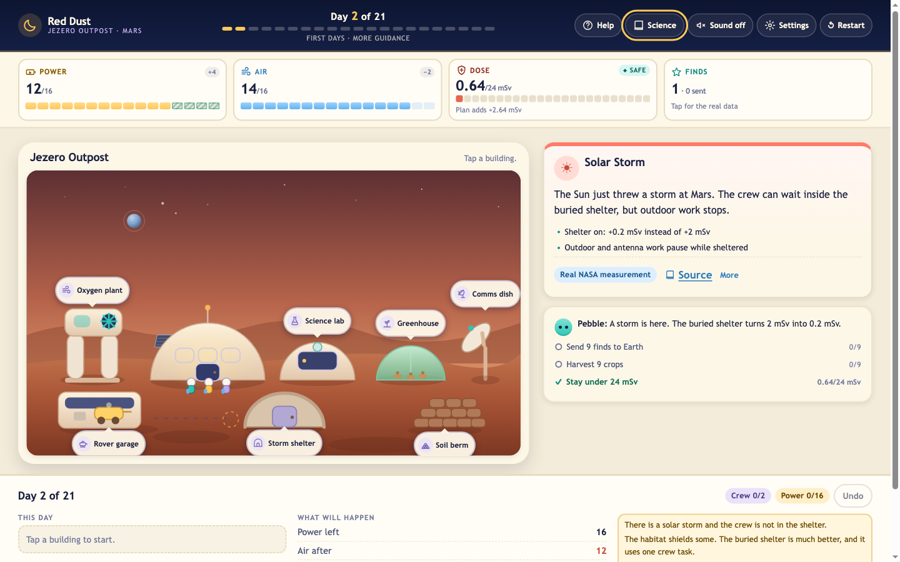
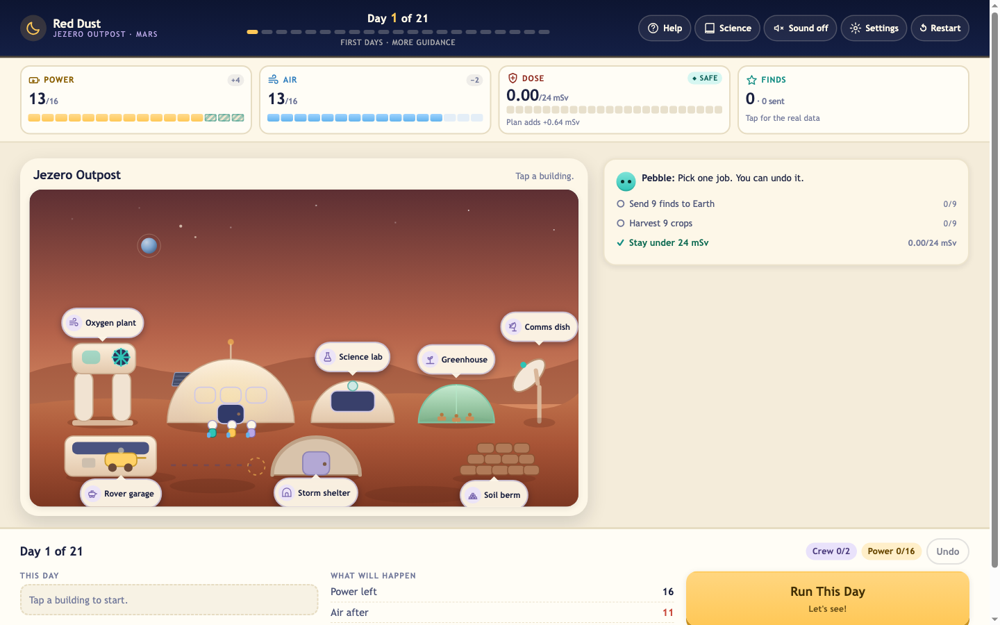
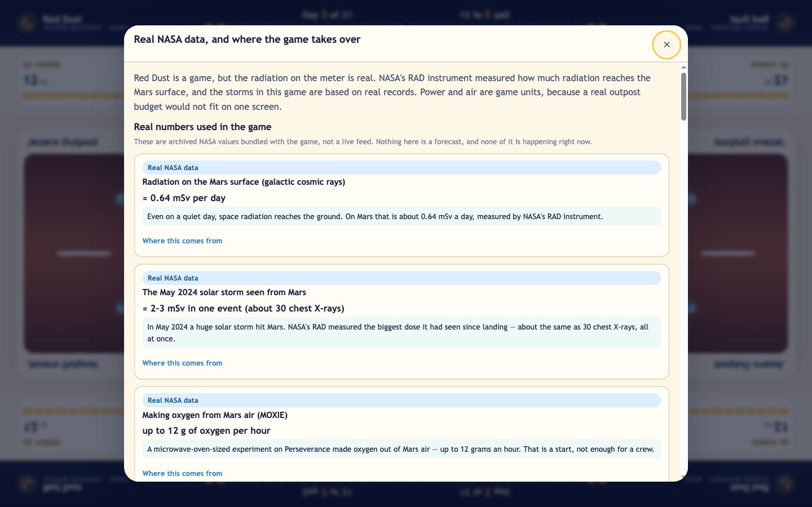
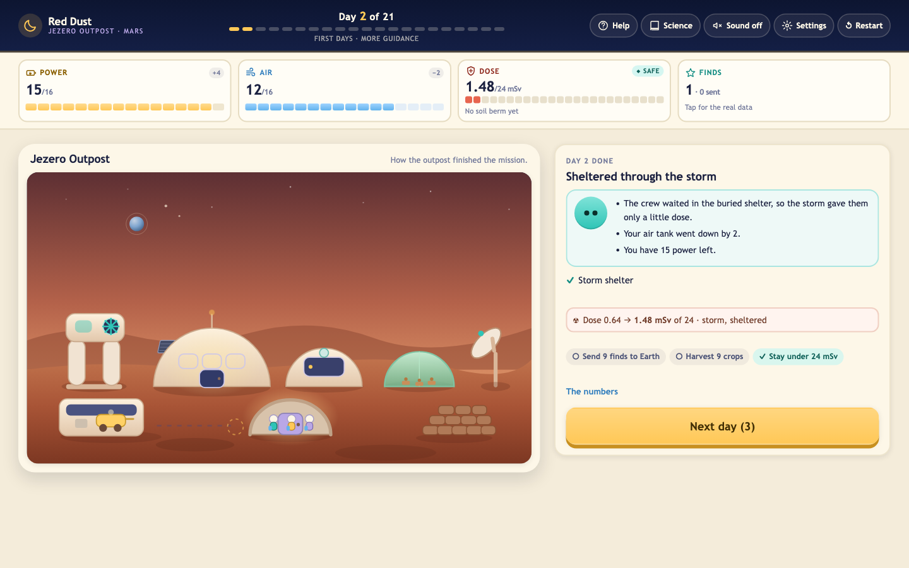

NASA Space Apps Challenge 2026 · Project demo
A browser game that lets 7–12 year-olds run a Mars outpost and feel the real trade-off behind every astronaut decision: power, air, or radiation dose.
The problem
“Every choice should cost something.”

The solution

Relevance · the data is the game
| NASA resource | Value used | What it controls in the game |
|---|---|---|
| MSL/RAD, Curiosity | 0.64 mSv/day | Background dose charged every day of every mission |
| RAD, 20 May 2024 storm | ≈2 mSv unshielded | The storm card, the shelter (2 → 0.2 mSv) and the whole risk curve |
| MEDA, Jezero temperatures | −69 to −41 °C daily means | Cold-snap days cost 1 power of heating |
| MOXIE | 12 g/h peak, 122 g total | Oxygen plant: 2 power per air refill |
| Mars Relay Network | 3–22.4 min light time | Comms is a crew job — findings only count once sent |
| 2019 solar conjunction | 28 Aug – 7 Sep moratorium | Conjunction mission: sending is blocked for days |
| OSDR OSD-218 plant study | Delayed, uncertain results | Harvests arrive the next day, not the same day |
Also used for the weather deck: 2018 global dust storm (Opportunity), InSight S1222a (Mw 4.7), Perseverance's first core, Ingenuity's 72 flights, dust-devil panel cleaning. Game units (power, air, crew cards) are labelled as game values inside the app.
Validity · designed for a 9-year-old

Creativity · built and tested
analyze() for preview and result“The preview and the result come from the same function, so the game cannot lie to a child.”

AI use, declared: SI tools wrote code, SVG art and copy; a human directed, reviewed and tested every change. No NASA logos or mission insignia appear anywhere. Screenshots here carry a visible AI-artwork watermark.
Impact · what happens next
Play: the live game
Code: https://github.com/dabrara/red-dust-jezero-outpost
Sources: listed in-game under “Real data & sources”